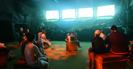
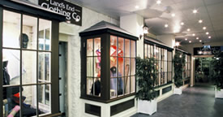

Land's End - Make a Day of it
- Land's End (08717 200055)
Land's End, Sennen, Cornwall,
TR19 7AA
Find them on Google Maps
www.landsend-landmark.co.uk
What is it? - It's a memory you'll cherish forever - arriving like so many generations before you at one of the world's best loved landmarks. It's a place of almost mystical beauty where the might of the Atlantic meets the towering cliffs of Cornwall - a place where nature is still one of the big attractions. Discover a myriad of wild flowers, soaring seabirds or even seals coming out to play. Land's End has 5 superb attractions, plenty of cliff top trails to explore and the west country shopping centre.
Where is it? - At the south west tip of cornwall, at the very end of the A30.
When is it open? - Lands End is open from 10am daily all year round, except Christmas Eve and Christmas Day, closing at different times, according to day light hours.
Why should I/we go? - Land's End has a little of everything when it comes to attractions. Superb cliff walks, indoor events and sights, fireworks, shopping centre and a cafe all on one site.
|  | |
|  |